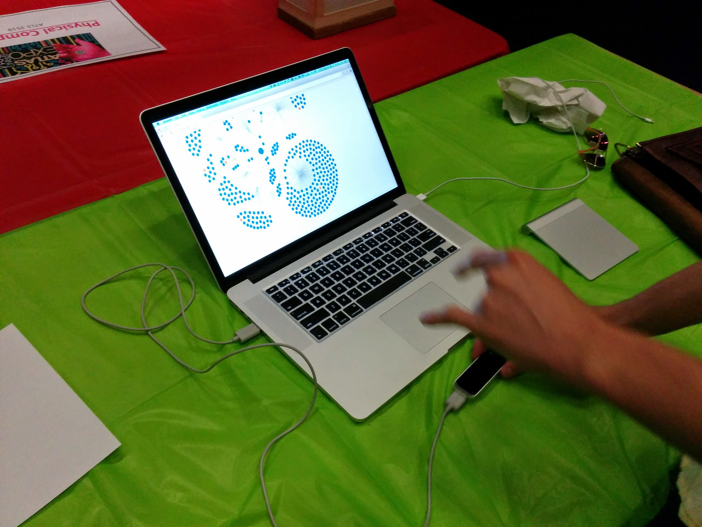

Beyond the Flipped Classroom
Learning By Doing Through Challenges and Hackathons
SIGCSE 2015by Michael Skirpan
Want to follow along or go back to something?
Go to http://mwskirpan.com/sigcse2015
Since we don't know eachother
I'm a PhD Student at CU-Boulder working in HCC under Tom Yeh. I started my program in CU's School of Education, but made my way over to the computer science department because I wanted to build things!
My research interests are:
- Educational Technologies
- Inclusive, Experiential, and Democratic Classroom Design
- Characterizing the kinds of insights (good and bad) we get from "Big Data"
- Modes of respresenting data (visual and otherwise)
- Art and Aesthetics of Technology and Data
GitHub: wannabeCitizen
Website: mwskirpan.com
What's ahead
- Framework
- Our Class Model
- Findings
- Future
- Q&A
I'll try to move fast!
A Teaser (what this looks like!)
Framework
Or, why I don't just stand up front and lecture
Democratic Education
- Ownership over one's education
- Learn how to motivate and direct oneself
- An equal (or any!) voice in classroom decisions
- Intrest-driven
- Can be an engine for critical pedgagogy
Cf. Jerry Mintz, Isaac Graves, Ben Kirshner, Paolo Freire, Meira Levinson, Amy Gutmann, Michael Apple, John Dewey
Or the old addage says it best..
If you're always doing what you're told, you'll always be being told what to do.This is a real problem!
Experiential Education
- Experience is pedagogy
- Emphasis on skills over facts
- Failure and iteration is good
- Student-centered rather than teacher-centered
Cf. John Dewey, Maria Montessori, Jean-Jacques Rousseau, Lev Vygotsky, Mitch Reznik
So what's this have to do with the flipped classroom?
It was a design inspiration, but we changed it quite a bit
| Mazur's Flipped Classroom | Our Design |
|---|---|
| At-home Video Lecture | Learning Challenges |
| Problem Workshops | In-class Hackathon |
| Clicker Quizzes | Milestone Submissions | Peer Learning | Small Group Coding |
What we are looking to improve upon from traditional teaching:
- Students walk away with tangible skills that have been experientially verified
- Get students more engaged by giving them a stake in their education
- More inclusive classroom by making it a working community
- Real projects that invest students in continuing with the discipline
- Get real insight into individual learning processes
What we actually did
We have completed two courses with this design: Spring 2014 for a User-Centered Design and Development Class (what the SIGCSE paper is based on) and Fall 2014 for Big Data.
We are currently in the midst of our third iteration with another UCDD class
Class Components: Overview
- Learning Challenges at Home
- Hackathons in Class
- Journals and Forums for Feedback and Formative Assessment
- Semester Projects
Differences between Fall and Spring
- Spring - Google Docs vs. Fall - GitHub and Class Website
- Spring - Learning Journals vs. Fall - Student Forums
- Spring - Small Final Project in Teams vs. Fall - Big Final Project as Class
- Spring - No Lecture vs. Fall - 30-45 mins for Lecture, Discussion, or Presentation
I can answer the why's of these changes during Q&A
Learning Challenges
- Assignment Posted Tuesday Due Sunday
- Checkpoint-based Tutorial Style
- Submission Template
- Reflection Questions


Understanding Our Students
Google Docs Paradigm

GitHub Paradigm

In-class Hackathons
Flow of Class
- Show and tell + Short Discussion of Concepts (Fall only)
- Instructors or industry/academic speaker motivates hackathon with talk (Fall only)
- Students are either assigned or choose groups
- Navigate to assignment to see objectives and prerequisites
- Come up with implementation plan
- Submit milestones using template
- Share with class
- Outside judges give feedback
What a student would see
What it really looks like!
Working on Github's API
An Outcome!
Fast Forward Labs joined us
@ Google - Boulder
Hacking Robots in a Theater Space
Journals and Forums
Spring 2014
Each week, we provided a series of qualitative and quantitative questions that students submitted with homework. We used this feedback as formative assessment to adapt each week's content and challenges.
Fall 2014
To be truer to "coding communities", instead of journals we asked students to post questions and feedback on a public forum.

Class Projects
Spring 2014
- Small groups worked on separate projects
- Projects were proposed 2/3 way into semester
- Milestones showed progress
- Final submission need only be prototype
Fall 2014
- Project development began first week of class with 'mini-project'
- Final project was a class effort toward a massive installation (Thanks to CU's EEF!)
- Students each submitted an idea then voted what would be implemented
- End result was a full implementation for a showcase exhibit
Check out the results!
Spring - Leap Motion Graph Traversal
Spring - Leap Motion Gesture Music
Fall - Conversation Tracker
Fall - Live Equalizer
Fall - Warhol + Wozniak + Data
Fall - Foot Traffic Visualization
Findings
Surprise! Students Procrastinate
Now we have mid-week milestones due!
Time = Perceived Difficulty
Now we break up difficult tasks into smaller units
Some Spring Numbers
| Measure | Percent |
|---|---|
| Attendance | 92% |
| Assignment Completion | 89% |
We're not done analyzing fall data, but some preliminary findings are:
- Public forums are good for peer learning, but bad for feedback.
- Bigger project yields bigger results
- Students respond well to choice (highest completion rates and most work put in for things that were voted/chosen)
- Google revision data leads to finer-grain insight into common mistakes and progression, but requires more analytic tools. GitHub better supports content delivery and peer-to-peer learning networks.
Some remarks on scalability and generalizability
Scalability
Benefits...
- Help retain sense of community rather than "being another number."
- Mechanism for peer learning as small-group work scales.
- Content delivery works the same.
Costs...
- Student-level insight requires more-than-usual instructional support
- Harder to spot "free riders"
- Tracking and supporting projects could get unwieldy
Generalizability
Out of the box, this is best for CS courses with an emphasis on building things (ie., software engineering, front-end design, data engineering, etc.)
However, what if you wanted to test the waters in a more conceptual or math-based course (ie, algorithms, numerical analysis, programming languages, etc.)?
Suggestions
- Use hackathons more sparsely to synthesize concepts as they are wrapped up.
- Use the project design phase to gauge your students' applied understanding.
- Find paradigmatic code snippets, articles, and resources for your students to go through at home to lessen the burden on class time.
Future
I want to...
- Hybridize the classroom: engineers and arts/humanities folks
- Integrate more conceptual framework
- Allow the curriculum to be more dynamic to student interests
My own courses
Fall 2015 - Democracy in the Digital Era
Spring 2016 - Data Insights